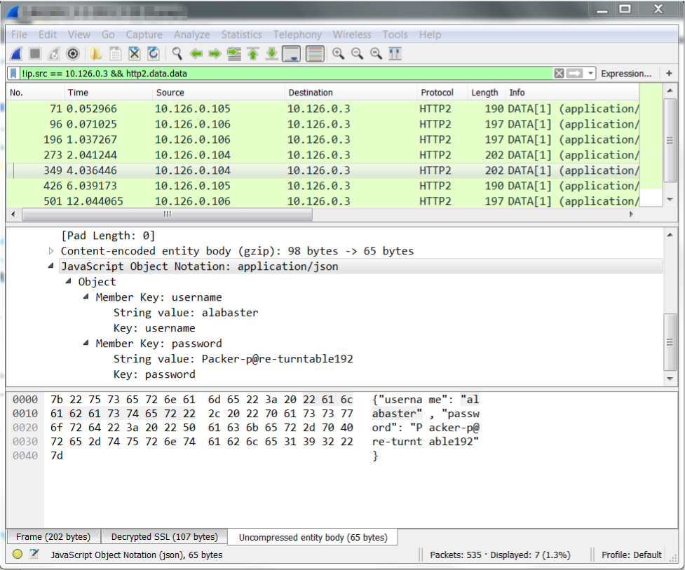

Objective #8: Network Traffic Forensics
Problem
Santa has introduced a web-based packet capture and analysis tool at https://packalyzer.kringlecastle.com to support the elves and their information security work. Using the system, access and decrypt HTTP/2 network activity. What is the name of the song described in the document sent from Holly Evergreen to Alabaster Snowball? For hints on achieving this objective, please visit SugarPlum Mary and help her with the Python Escape from LA Cranberry Pi terminal challenge.
Hints
After solving the Python Escape from LA terminal, SugarPlum Mary provides these hints:
Another elf told me that Packalyzer was rushed and deployed with development code sitting in the web root.
Apparently, he found this out by looking at HTML comments left behind and was able to grab the server-side source code.
There was suspicious-looking development code using environment variables to store SSL keys and open up directories.
This elf then told me that manipulating values in the URL gave back weird and descriptive errors.
I'm hoping these errors can't be used to compromise SSL on the website and steal logins.
On a tooootally unrelated note, have you seen the HTTP2 talk at at KringleCon by the Chrises? I never knew HTTP2 was so different!
SugarPlum must really want us to attend the KringleCon talk by Chris Elgee and Chris Davis called "HTTP/2 - Because 1 is the Loneliest Number", because she mentions it not once, but twice!
Solution
Finding nothing noteworthy about the logon page source code, I create an account and log into the webpage. I'm able to create a packet capture, but it's all encrypted traffic on port 443.
Looking over the webpage source, I find the following comment that suggests that there is some server side code in app.js.
//File upload Function. All extensions and sizes are validated server-side in app.js
My initial attempt at loading https://packalyzer.kringlecastle.com/app.js fails with a Not Found error. Then I notice that images and CSS are being loaded out of the /pub directory, so I try https://packalyzer.kringlecastle.com/pub/app.js, and get a page full of Javascript back.
I spend some time reading over the code, trying to determine what it does, and a few things stand out.
const dev_mode = true;
It seems the developers have left some development mode features enabled. Developers will often put special routines in their programs to help with testing and troubleshooting. These are supposed to be removed before pushing code to production, since they usually involve dangerous activities like bypassing security checks or exposing sensitive variables in the user interface. I save a copy of the .js file and search to see where dev_mode is referenced.
C:\hhc18> curl.exe -s -o app.js https://packalyzer.kringlecastle.com/pub/app.js
C:\hhc18> type app.js | find /n "dev_mode"
[26]const dev_mode = true;
[27]const key_log_path = ( !dev_mode || __dirname + process.env.DEV + process.en
v.SSLKEYLOGFILE )
[86]if (dev_mode) {
In the block of code starting on line 86, a list of allowed directories is defined. Under normal conditions, users should only be able to access paths that begin with /pub/ and /uploads/, but with dev_mode enabled, any directory with the same name as an environment variable key will be permitted. If we can figure out what some of the environment variables are being used, we might be able to find something that the developer didn't intend for us to access.
if (dev_mode) {
//Can set env variable to open up directories during dev
const env_dirs = load_envs();
} else {
const env_dirs = ['/pub/','/uploads/'];
}
This line hints that DEV and SSLKEYLOGFILE are environment variables, so those paths should be open to us.
const key_log_path = ( !dev_mode || __dirname + process.env.DEV + process.env.SSLKEYLOGFILE )
Let's see what happens when we visit those URL's:
C:\hhc18> curl https://packalyzer.kringlecastle.com/sslkeylogfile/ Error: ENOENT: no such file or directory, open '/opt/http2packalyzer_clientrandom_ssl.log/' C:\hhc18> https://packalyzer.kringlecastle.com/dev/ Error: EISDIR: illegal operation on a directory, read
From this, I'd have to deduce that ssl key log filename is packalyzer_clientrandom_ssl.log, and a /dev directory exists. Let's put those two things together:
C:\hhc18> curl -s https://packalyzer.kringlecastle.com/dev/packalyzer_clientrandom_ssl.log CLIENT_RANDOM 6C9AE5A23560F05E825A4B90F38F93DD6540C8D2EEB35ACC78CE0CFF40933DFA FAF08DD05340CDD46CC1745FEC3223FF9C4E4416861384AD2B2BF957DF7D671FEBB12ADC18B3BA41C183E943B482C352 CLIENT_RANDOM C1E4FD63396F6464220AE6488C01052EC0FF04A3273F905D398BB6AE1A2B2034 151F2960D6C9E9AD2855F0B22A85155D13C073ED34C5F3CF5FB5040F90F5662022A40558DD702F2B115A92668CE7268B CLIENT_RANDOM D94A8791854038E608243FC4EB27FB2CBE40A5C315929CBDC58881E0D8683F9F EE4082BEFAB006A5F5190F84BA62342E471F0C9139D3AF83D0011C19EEED96EB52BF0ED90AA5DEE1EC5AE4955F6D6967 CLIENT_RANDOM 4CFA5920FE0064A72AA754982567D09A56760D54912B8E10A967C7E9388DD189 9F18407AFACB57DB96325941BB25806ECF528D8DA915BC633B5A2D3738257C48B81994B0F560E5DEEAE8D71346343EA1 CLIENT_RANDOM 65E4B65F3C16CA2BC684D69FDFAEE53F72C795A12F32CE45202ED1BA9AD5E5EA F05717723276263EFC62BEAE10B157650D4C36327CB4197A95B458792B2189D0FE7C8798ED2B2CCA7836A8BA6EF14277 <truncated>
Now we know where to obtain the ssl key log file from, but before downloading it, we need to run another packet capture.
Note
It's important to download the files in the right order. Each web connection is assigned a unique key to encrypt its data. Therefore, the ssl keys we need don't exist until the connections have been made. The encrypted data and the specific key that encrypted that data both have to be loaded into Wireshark for this to work.
With both the packet capture and the ssl key log file downloaded, we can load these into Wireshark and view the unencrypted contents of the http2 packets. The ssl key log file goes into protocol preferences for ssl as shown here:

The following credentials were found while analyzing the http2 data packets:
| Username | Password |
|---|---|
| alabaster | Packer-p@re-turntable192 |
| pepper | Shiz-Bamer_wabl182 |
| bushy | Floppity_Floopy-flab19283 |
Alabaster is an admin, so let's try logging on as him first. I find that there's a saved packet capture in his account that is named "super_secret_packet_capture.pcap". Download and inspect this pcap in Wireshark, and you'll find an smtp mail transmission that contains a base64 encoded file attachment.
220 mail.kringlecastle.com ESMTP Postfix (Ubuntu)
EHLO Mail.kringlecastle.com
250-mail.kringlecastle.com
250-PIPELINING
250-SIZE 10240000
250-VRFY
250-ETRN
250-STARTTLS
250-ENHANCEDSTATUSCODES
250-8BITMIME
250 DSN
MAIL FROM:<Holly.evergreen@mail.kringlecastle.com>
250 2.1.0 Ok
RCPT TO:<alabaster.snowball@mail.kringlecastle.com>
250 2.1.5 Ok
DATA
354 End data with <CR><LF>.<CR><LF>
Date: Fri, 28 Sep 2018 11:33:17 -0400
To: alabaster.snowball@mail.kringlecastle.com
From: Holly.evergreen@mail.kringlecastle.com
Subject: test Fri, 28 Sep 2018 11:33:17 -0400
MIME-Version: 1.0
Content-Type: multipart/mixed; boundary="----=_MIME_BOUNDARY_000_11181"
------=_MIME_BOUNDARY_000_11181
Content-Type: text/plain
Hey alabaster,
Santa said you needed help understanding musical notes for accessing the vault. He said your favorite key was D. Anyways, the following attachment should give you all the information you need about transposing music.
------=_MIME_BOUNDARY_000_11181
Content-Type: application/octet-stream
Content-Transfer-Encoding: BASE64
Content-Disposition: attachment
JVBERi0xLjUKJb/3ov4KOCAwIG9iago8PCAvTGluZWFyaXplZCAxIC9MIDk3ODMxIC9IIFsgNzM4
IDE0MCBdIC9PIDEyIC9FIDc3MzQ0IC9OIDIgL1QgOTc1MTcgPj4KZW5kb2JqCiAgICAgICAgICAg
<snip>
ZDIwYjI1MmU0OWRiPl0gPj4Kc3RyZWFtCnicY2IAASZGRj0FBiYg6yiIZP8OIiWngUhGNRCpIw5m
2zMAAFMTA30KZW5kc3RyZWFtCmVuZG9iagogICAgICAgICAgICAgICAgICAgICAgICAgICAgIApz
dGFydHhyZWYKMjE2CiUlRU9GCg==
------=_MIME_BOUNDARY_000_11181--
.
250 2.0.0 Ok: queued as 4CF931B5C3C0
QUIT
221 2.0.0 Bye
Use a base64 to binary file converter, like the one at https://www.motobit.com/util/base64-decoder-encoder.asp to produce a file. Since the filename is mysteriously missing from the transmission, I use the file command in my bash shell to check the file type and discover that it is a PDF.
$ file smtp.pdf
smtp.pdf: PDF document, version 1.5
Answer: Mary Had a Little Lamb